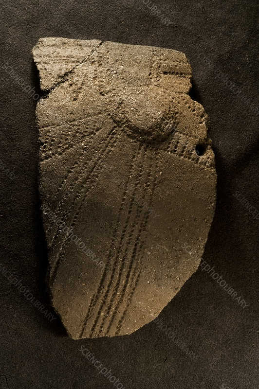
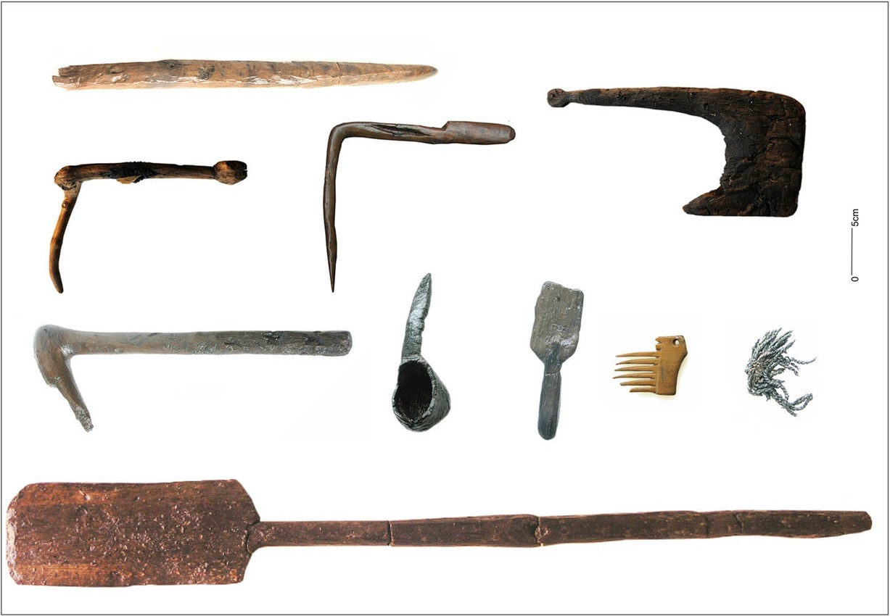

The remarkable wooden tools and other items discovered at La Draga have, since at least 1995, overshadowed the significance of objects such as ceramics, chipped flint tools, and polished stone and bone implements, which are commonly found at early Neolithic sites in Catalonia, including La Draga. However, some of these objects, particularly pottery vessels, remain crucial for more precisely defining the settlement's chronology.
Below, besides the important wooden objects, other important tools made by different materials will be shown.
Clay

One of the important finds include ceramic pots made out of local clay. In sectors B and C large
pieces of these pots have been found, also decorated with cockleshells. This type of
decoration is usual in the western Mediterranean Cardial-ware culture. The most common pots at La Draga are small and medium-sized (bowls and cooking pots).
The second most widespread are large cylindrical jars used for food storage.
Horns and bones of animals
Like many Cardial sites, in La Draga there is also a wide array of implements crafted from animal horns and bones, predominantly from deer, sheep, goats, and bovines. Recovered items comprise burins, spatulas, long pins, a curved needle with an eye at the base, spoons, toothed spatulas for decorating earthenware, and tubes crafted from bird bones.
Wood

Due to the abundance and diversity of wooden artifacts unearthed at La Draga, this early Neolithic village in northeastern Catalonia stands as an invaluable source of information on Neolithic tools crafted from perishable organic materials. It boasts the most significant collection of such finds from that era.
We find at least 168 wooden items in Sectors B and C. This material was used for the creation of multiple objects such as kitchen implements, baskets, tools for weaving, farming and hunting.
The collection display a significant number of farming tools like sickles crafted from box-
wood. Additionally, digging sticks, essential for sowing grains, is another part the
agricultural practices.
Regards hunting, we see the presence of 29 arrow shafts, which were created with different
types of woods.
But one of the most significant findings of the area were these two bows made from yew, found in 2001 and 2003 respectively . These two Neolithic bows from La Draga are probably among the oldest in Europe.